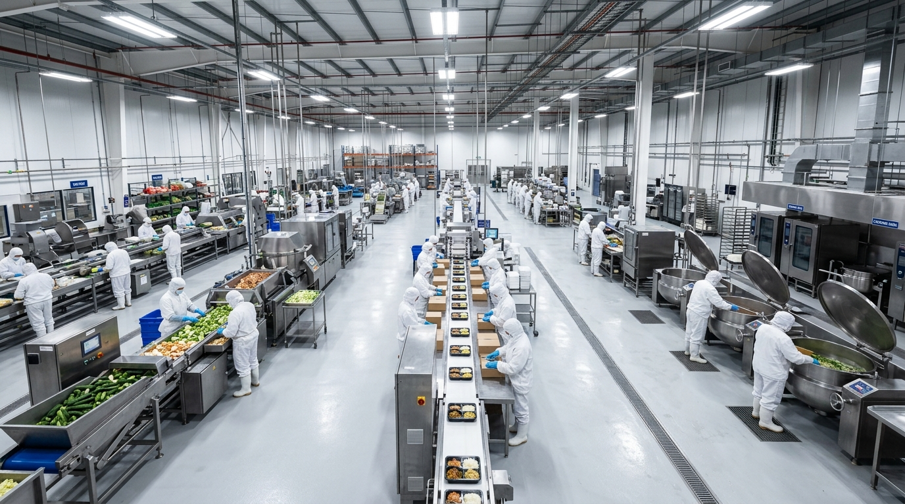
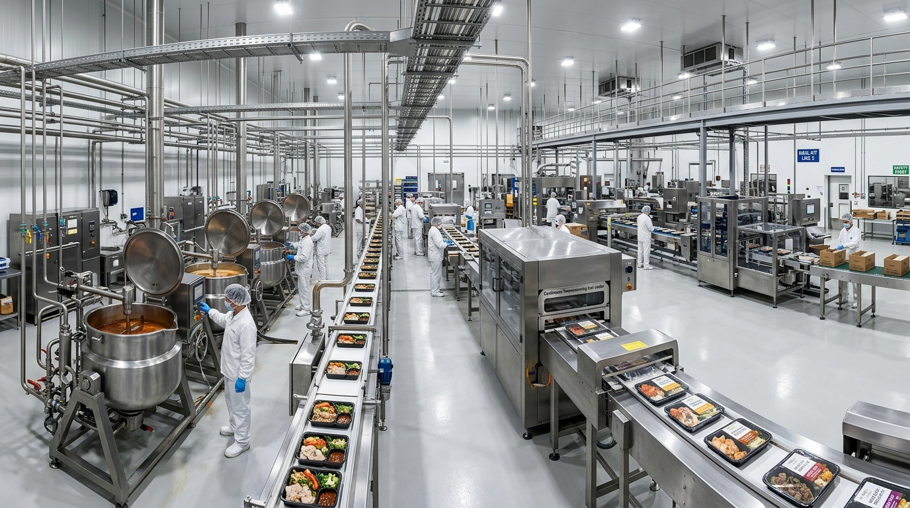
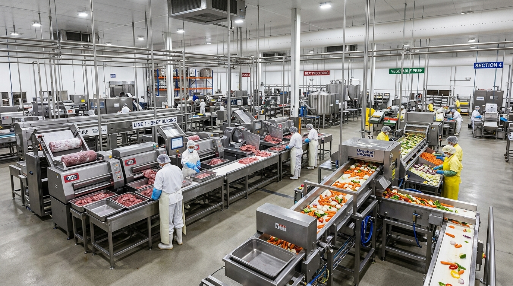
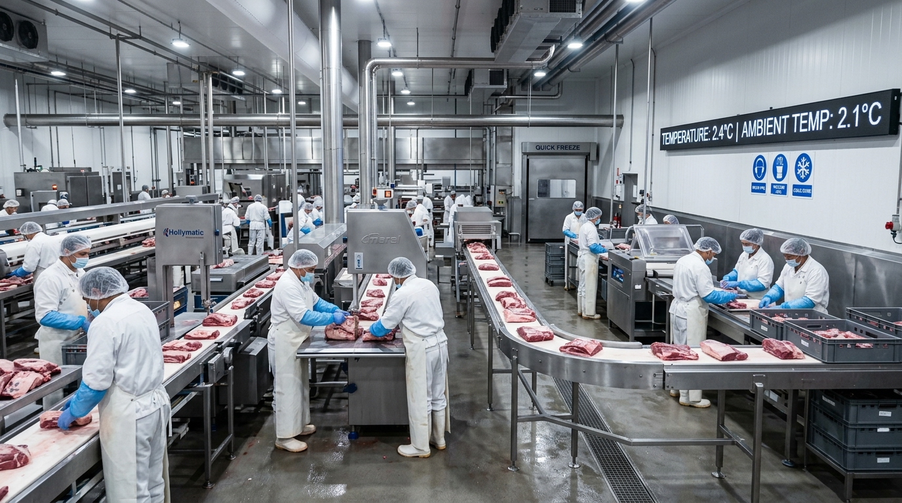

从单机设备到整厂自动化交付
驱动现代中央厨房与食品工业提效
世宗高科技专注食品加工与商用厨房装备制造，提供从单机到整线交付的一体化解决方案与 OEM / ODM 支持。
四大核心业务方向入口
满足严苛食品安全与高强度连续作业要求
全流程定制交钥匙工程
赋能现代食品工业标准化升级
根据车间产能负荷与出品标准，提供从产线动线规划、成套设备选型到安装调试的全流程运营支持。

SCENE 01 · 团餐净菜中央厨房与团餐配送
解决人工切配产能瓶颈，实现果蔬清洗脱水与肉类分割的标准化连续作业。

SCENE 02 · 预制菜智造预制菜与深加工工厂
实现温控炒制、自动定量出料与高洁净密封包装，保障风味稳定一致。

SCENE 03 · 连锁集配连锁餐饮与切配中心
为连锁门店提供集中切配，支持牛羊肉微米级切卷与鲜肉高效分切。

SCENE 04 · 冷链生鲜肉食分割与冷链生鲜
全机身 STS304 防冲淋设计，适应低温高湿车间连续高强度骨肉解构作业。
从原料预处理到成品装箱
五大标准化工序系统互联
原料提升与初检分选系统
食品级链板提升机配合变频倒料料斗与不锈钢初检台，实现大宗食材高速自动化上料。
解决人工频繁搬运倒料痛点，杜绝原料泼洒，上料效率提升显著。
刺身级精密切削与切配系统
高硬度特种合金刀组高速运转，切口平整不开裂，最大程度保全食材汁液与纤维组织。
解决切面粗糙、厚薄不均与碎肉损耗偏高痛点，出品规格高度一致。
多级涡流冲浪清洗与脱水线
高压气泡与强力涡流冲浪立体翻滚，配合水循环过滤与低损离心脱水，彻底剥离泥沙杂质。
有效去杂去残且不伤菜叶表皮，保全果蔬水润爽脆质感。
智能温控行星搅拌蒸煮系统
行星刮底夹层烹饪釜，自转公转双轴复合运动，预设多段工艺曲线，实现全自动温控与出料。
彻底杜绝糊锅与受热不均，保障万份餐品风味完全标准化复刻。
热成型气调包装与全检线
热成型气调置换真空保鲜包装，直连金属异物检测仪与动态检重机，完成出厂安全闭环。
超低残氧延长保鲜货架期，杜绝异物隐患，保障出厂安全。
世宗高科技核心产品矩阵
自动化处理单机与模块化机组
源自韩国23年精工制造底蕴，针对中央厨房、肉类分割、果蔬加工与调理配餐提供高产能、高耐用度、极易拆洗的卫生级食品工业装备。
23年韩国精工底蕴
四大核心支柱 · 赋能现代食品工业
以韩国原厂工程研发为中枢，融合食品工艺学经验、严苛卫生标准与整线交钥匙交付能力。
23年精工制造经验
始创于2003年韩国清州，专注商用食品机械研发，累计服务全球19,000+中央厨房与连锁餐企。
自主专利与卫生标准
拥有15+项核心技术专利，整机选用食品级 STS304 不锈钢，满足严苛卫生标准与防冲淋要求。
端到端整线集成交付
具备从原料处理、精密切割到气调包装的交钥匙实力，提供车间动线规划与自动化联调。
全球交付与服务保障
设备远销全球18+国家，支持自带食材远程实时视频试机与快速备件发运保障。
标杆工程落地与整厂交付实绩
为全球超19,000个客户提供从车间规划、设备研制到现场联调交付的交钥匙工程。